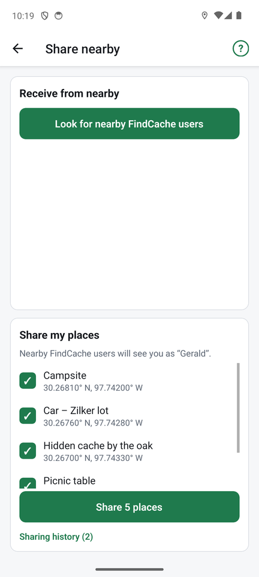

Sharing places

You can swap places with another FindCache user standing near you, with no internet and no account. It uses Bluetooth, so both phones need Bluetooth turned on, and the Share nearby screen open. Android asks for Nearby devices permission the first time.
Give places away
- Tap Share nearby.
- Under Share my places, tick the places you want to offer.
- Tap Share N places. Keep the screen open. Your phone is now visible to others as the name shown there (your name for sharing, set in Settings; it starts as your phone's name).
- If some of the places are ones you have found, you are asked whether to include found information.
Receive places
- Tap Share nearby, then Look for nearby FindCache users.
- Tap a name in the list.
- The places download. Tick the ones you want and tap Import selected. Places you already have (same name and position) are skipped, and you can cancel.
Both phones can share and look at the same time, and several friends can receive from you at once. You can send as many places as you like, with long notes.
Sharing history
Under the share button, Sharing history lists who downloaded your places, when, and how many, newest first. Older versions of FindCache do not send a name and show up as "FindCache user". Choose how long entries are kept in Settings (from 7 days to forever); Clear history removes them all.
If a friend's phone does not show up, check that both phones have Bluetooth on and the Share screen open, and stand within a few metres. More in Help and troubleshooting.
To swap with someone who has no Bluetooth available, or to move places to a computer, use files.
← Maps and offline use ↑ FindCache overview Import and export →